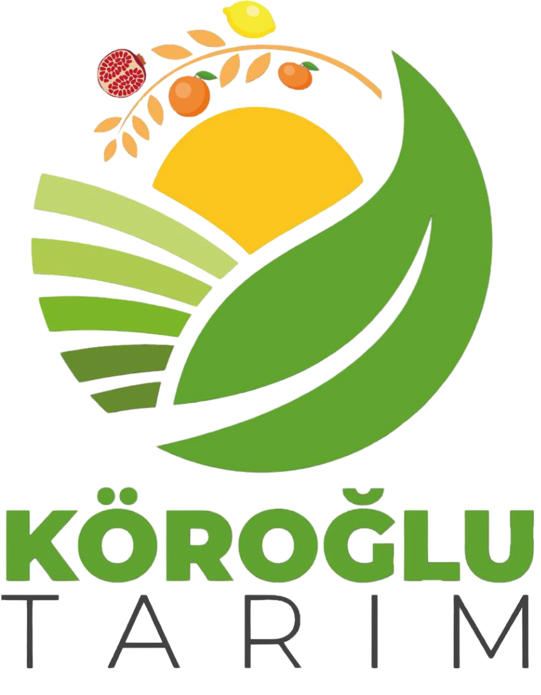
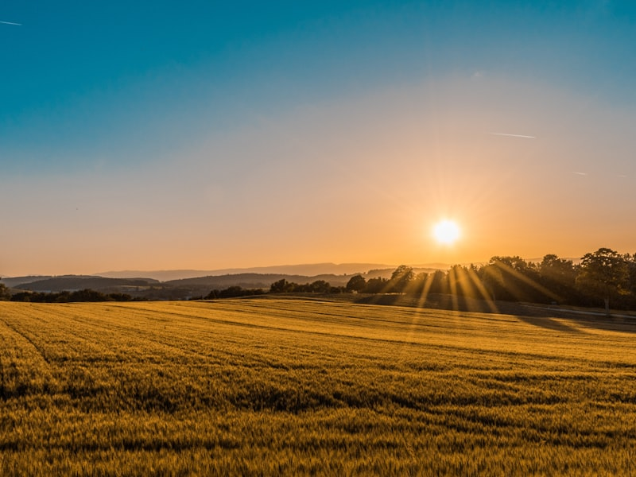
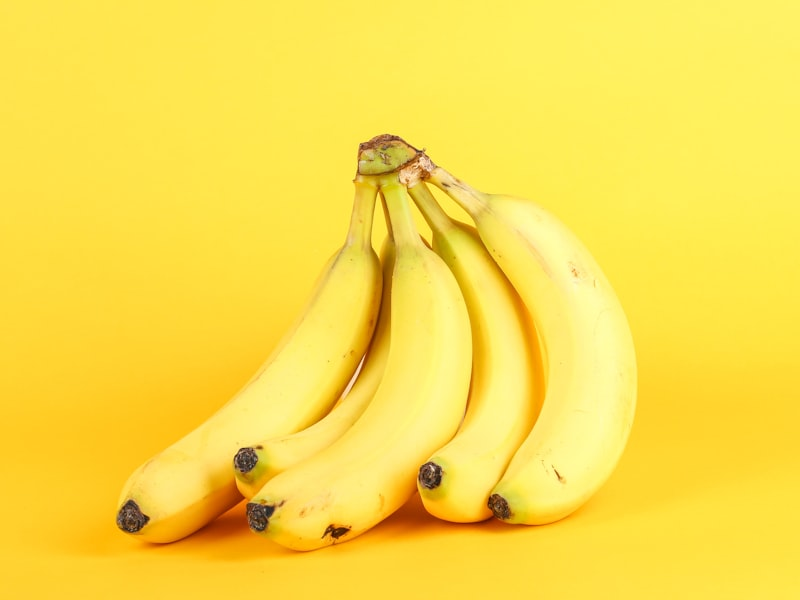
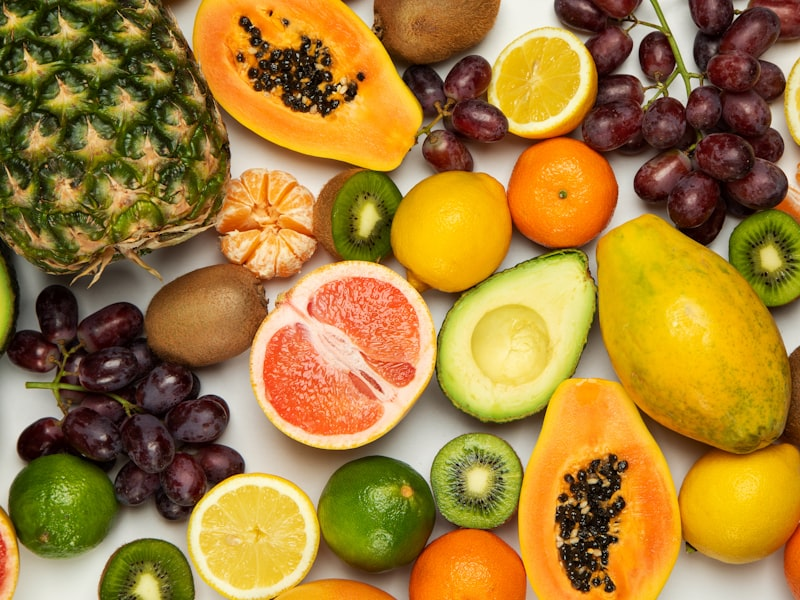

KÖROĞLU TARIM
Çukurova'nın Bereketli Topraklarında Sürdürülebilir Tarım
Biz Kimiz?
Hakkımızda
Çukurova'nın bereketli topraklarında doğmuş, geleneksel üretim anlayışını modern tarım teknikleriyle birleştiren bir şirketiz
Köroğlu Tarım, Çukurova'nın bereketli topraklarında doğmuş, geleneksel üretim anlayışını modern tarım teknikleriyle birleştiren bir şirkettir. Narenciye başta olmak üzere bölgenin en kaliteli meyvelerini yetiştiriyoruz.

Sürdürülebilir Tarım
Doğa dostu yöntemlerle toprağı koruyoruz
Kaliteli Ürünler
En yüksek standartlarda üretim yapıyoruz
Doğaya Saygı
Çevre bilinci ile geleceği koruyoruz
Misyonumuz
Doğaya saygılı üretim yapmak, tüketiciye en sağlıklı ve güvenilir ürünleri sunmak. Türkiye'nin tarım gücünü uluslararası pazarlarda büyütürken sürdürülebilirliği ilke edinmek.
Vizyonumuz
Sürdürülebilir tarım alanında öncü olarak, gelecek nesillere daha yaşanabilir bir dünya bırakmak için teknoloji ve geleneksel bilgiyi harmanlayarak, doğaya saygılı üretim yöntemleri geliştirmek.
Sürdürülebilirlik
Sürdürülebilirlik Anlayışımız
Doğaya saygılı üretim yöntemleriyle gelecek nesillere daha iyi bir dünya bırakıyoruz
Doğa dostu yöntemler
Minimum kimyasal kullanımı ile sağlıklı ürünler yetiştiriyoruz.
Su verimliliği
Damlama sulama sistemleri ile %30 su tasarrufu sağlıyoruz.
Geri dönüşüm
Organik atıkları kompost haline getirerek toprağa geri kazandırıyoruz.
Gelecek nesillere
Sürdürülebilir tarım uygulamaları ile toprağın verimliliğini artırıyoruz.
Sürdürülebilirlik Başarılarımız
Yolculuğumuz
Nereden Başladık, Bugün Neredeyiz
Çukurova'nın bereketli topraklarında geçirdiğimiz yolculuk

1970'li Adımlar
Köroğlu Tarım, Çukurova'nın bereketli topraklarında küçük bir aile işletmesi olarak kuruldu.

2000'li İlk Bahçemiz
Modern tarım tekniklerini benimseyerek üretim kapasitesini artırdık ve kalite standartlarını yükselttik.

2012 Şirketleşme
Sürdürülebilir tarım uygulamalarını hayata geçirdik ve çevre dostu üretim yöntemlerini benimsedik.

Bugün
Teknoloji ve geleneksel bilgiyi harmanlayarak, gelecek nesillere daha iyi bir dünya bırakma hedefindeyiz.
İnovasyon ve Teknoloji
Ar-Ge Yaklaşımımız
Geleceğin tarımını şekillendirecek yenilikçi ve sürdürülebilir çözümler geliştiriyoruz
Geleceğe Yön Veren Ar-Ge Yaklaşımımız
Üretim faaliyetlerimizin yanı sıra, önde gelen tohum ve gübre şirketleriyle aktif Ar-Ge çalışmaları yürütüyoruz.
Amacımız yalnızca bugünün ihtiyaçlarını karşılamak değil, geleceğin tarımını şekillendirecek yenilikçi ve sürdürülebilir çözümler geliştirmektir.
Bilimsel işbirlikleri, modern teknolojiler ve uzman ekibimizle kendi üretimimizde ve tarım ekosisteminde verimlilik, kalite ve çevre dostu uygulamaları destekliyoruz. Ar-Ge, inovasyon kültürümüzün ve geleceğe olan sorumluluğumuzun temelini oluşturuyor.
Doğal ve Kaliteli
Ürünlerimiz
Çukurova'nın bereketli topraklarında yetiştirdiğimiz kaliteli ürünler
Portakal
Çukurova'nın en kaliteli portakalları, doğal yetiştirme yöntemleriyle
Mandalina
Tatlı ve sulu mandalinalar, geleneksel tarım teknikleriyle
Limon
Yıl boyu taze limon, vitamin C açısından zengin

Greyfurt
Antioksidan açısından zengin, sağlıklı greyfurt

Nar
Antalya'nın en kaliteli narları, doğal yetiştirme

İncir
Kurutulmuş ve taze incir, geleneksel yöntemlerle
Zeytin
Sızma zeytinyağı ve sofralık zeytin

Pamuk
Yüksek kaliteli pamuk, sürdürülebilir üretim
Bizimle İletişime Geçin
İletişim
Sorularınız için bizimle iletişime geçin. En kısa sürede size dönüş yapacağız.
Mesaj Gönderin
İletişim Bilgileri
Ad Soyad
Haşim Alphan Köroğlu
Telefon
+90 536 054 45 45E-posta
alphankoroglu03@gmail.comAdres
Yunusoğlu Mah. Yunusoğlu Sok. No:117, Tarsus/Mersin Türkiye
Hızlı İletişim
WhatsApp üzerinden anında mesaj gönderin